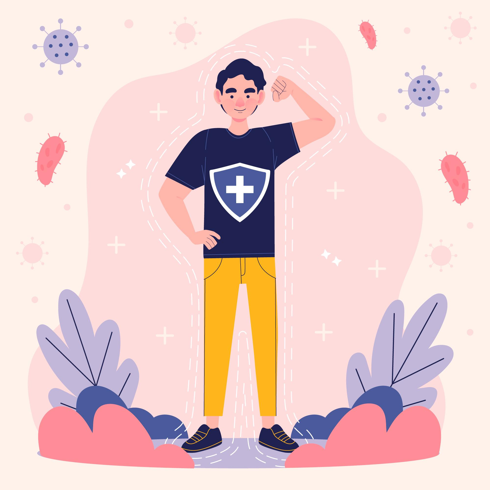
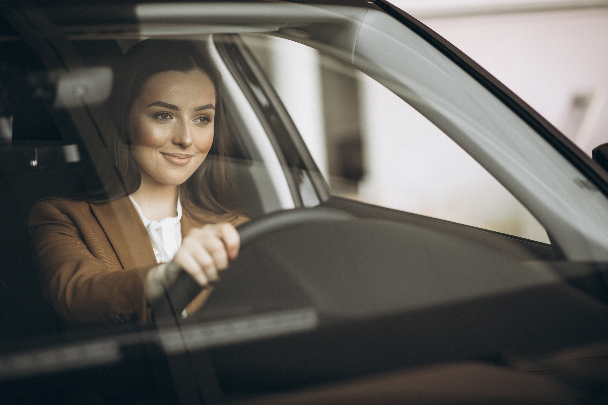
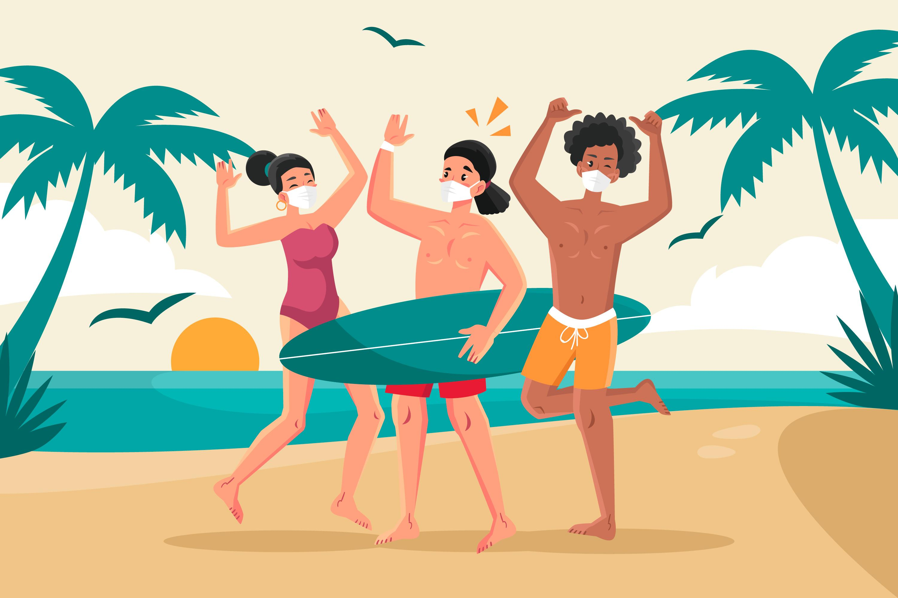

Yang pertama harus disiapkan jika ingin berpergian di era new normal seperti saat ini, adalah Kesehatan. Pastikan kondisi tubuh squanders sekalian dalam kondisi yang optimal apabila ingin berpergian, apabila kondisi tubuh squanders sekalian kurang sehat, mimin sarankan untuk istirahat dulu deh dirumah, karena selain tidak baik untuk Kesehatan, beberapa tempat traveling juga melarang orang-orang yang dalam kondisi kurang sehat untuk datang ketempat mereka, jadi apabila squanders tetep nekat bisa jadi, Cuma dapet capeknya doang. selain itu mimin juga menyarankan untuk membawa vitamin untuk menjaga antibody tubuh agar tetep optimal.

kemudian berpergianlah menggunakan kendaraan pribadi, hal ini untuk mencegah penyebaran virus COVID-19, karena jika squanders berkerumun di kendaraan umum, itu dapat mempercepat penyebaran virus COVID-19 squaders, dan meskipun menggunakan kendaraan umum squanders juga harus tetep menjaga jarak ya

Yang ketiga adalah selalu gunakan masker. Tempat traveling itu tempat yang rame dipenuhi banyak orang dari berbagai tempat jadi untuk mencegah menghirup udara secara langsung ditempat traveling sangat wajib menggunakan masker, karena salah satu jalur penyebaran virus COVID-19 itu melalui udara

Kemudian pilih tempat traveling yang tidak terlalu ramai, pilihlah tempat wisata yang sekiranya cocok untuk kondisi saat ini yang santai-santai aja yang tidak terlalu banyak orang berkerumunnya, selain itu mimin saranin coba cari tempat traveling yang deket-deket rumah aja jadi apabila Lelah bisa istirahatnya dirumah, selain lebih aman dan nyaman bisa irit biaya pula, hehe

Selain menggunakan masker, membawa handsatitizer juga penting squanders, karena bisa jadi secara sengaja atau tidak sengaja kita bersentuhan dengan objek disekitar tempat travel, untuk menjaga tangan kita agar tetap dalam kondisi bersih, membawa handsatitizer bisa jadi salah satu solusi yang ampuh

Kemudian membawa bekal sendiri, bekal yang dibawa dari rumah dan dibuat sendiri, jauh lebih higienis dari pada yang ada ditempat traveling. Apabila perjalanan squanders tidak memungkinkan membawa bekal sendiri setidaknya squaders membawa perelatannya saja seperti sendok, garpu, botol minum sendiri dari rumah.

Dan yang terakhir adalah menggunakan transaksi non-tunai saat bertransaksi di tempat traveling, ini untuk mengurangi kegiatan bersentuhan secara langsung dengan orang lain ditempat traveling squanders.